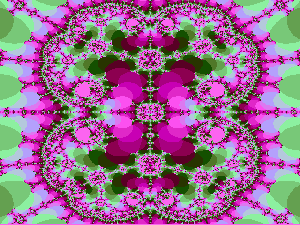
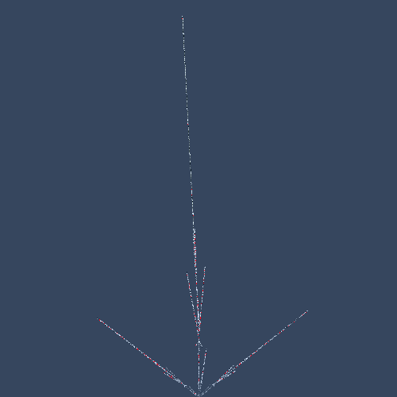
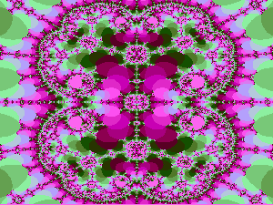
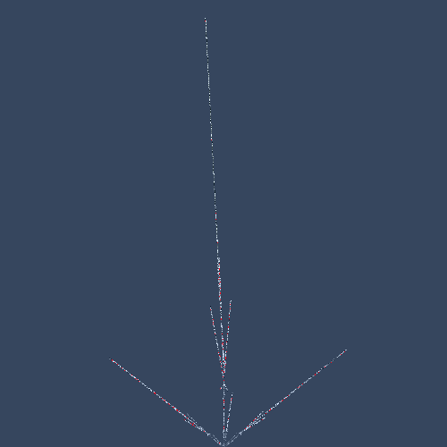

Belleza Matemática con Aplicaciones Infinitas
¿Qué son los fractales?
Los fractales son objetos geométricos complejos que se caracterizan por dos propiedades clave:
-
Autosimilitud: Se repiten a sí mismos a diferentes escalas. En otras palabras, una
pequeña porción del fractal contiene información sobre la estructura completa.
-
Dimensión fractal: Poseen una dimensión no entera, lo que significa que son más
complejos que las formas geométricas tradicionales como las líneas, cuadrados o cubos.
Ejemplos de fractales:
-
El conjunto de Mandelbrot: Un conjunto de
puntos infinitos que se define a través
de una simple ecuación matemática. Es famoso por sus patrones infinitamente complejos y coloridos.
-
El conjunto de Julia: Se define a partir de una
función polinomial de segundo grado, la cual se aplica de forma iterativa a un punto inicial dentro
del plano complejo.
-
El helecho de Barnsley: Se genera mediante un
conjunto de reglas matemáticas que
determinan dónde se coloca cada nuevo punto en el fractal.
Relación con la programación:
Los fractales tienen una estrecha relación con la programación debido a su naturaleza matemática y su
capacidad para ser representados en código. Algunos ejemplos de cómo se usan en programación son:
- Generación de imágenes: Los fractales se pueden usar para crear imágenes realistas
de paisajes,
plantas, nubes y otros objetos naturales.
- Compresión de datos: La autosimilitud de los fractales permite comprimir imágenes y
datos de manera
eficiente.
- Simulación de fenómenos naturales: Los fractales se pueden usar para simular el
comportamiento de
sistemas complejos como el clima, las turbulencias o el crecimiento de las plantas.
Los fractales son un campo fascinante que combina la belleza matemática con aplicaciones prácticas en
diversas áreas. La programación juega un papel fundamental en el estudio y la creación de fractales,
permitiendo explorar su complejidad infinita y generar imágenes y simulaciones de gran realismo.
 


